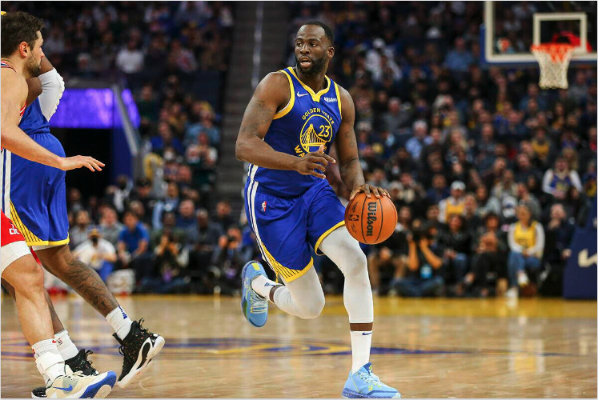

This aspect of basketball is extremely overlooked by the younger players beginning their journey into the sport, but is extremely valuable. Thing is, there is no step by step way to develop your Basketball IQ. The best way to do so, like learning any other topic, is learning from the best. Watch your favorite superstar players and decipher patterns they follow in similar situations, or simply talk to your coach about how he sees your game awareness and ask him/her for tips. Slowly, you'll see it coming to you.

Back to Home